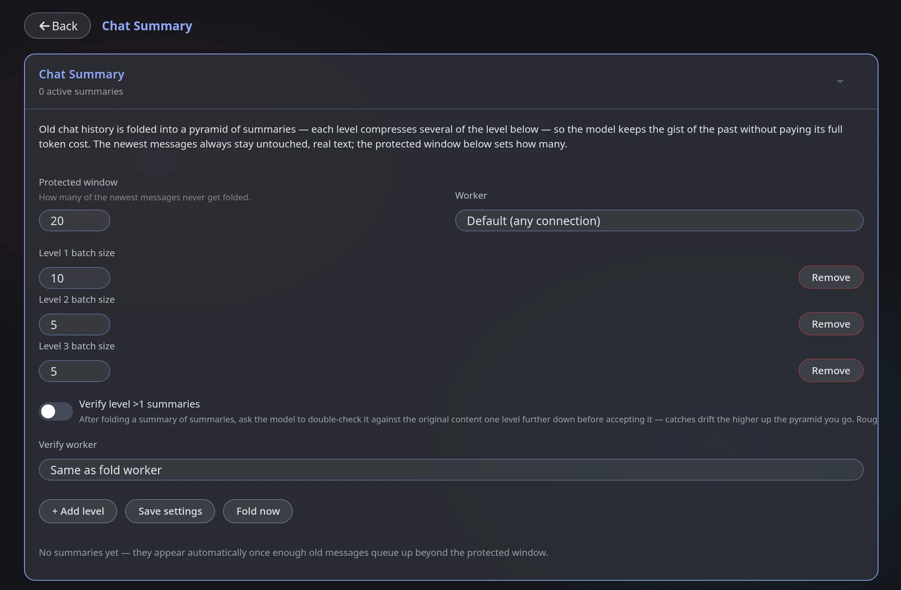

Memory & prompts
Chat Summary
NeedsA model connection
Find itEngine panel → Chat Summary (tile)
Long chats outgrow the model's context. Chat Summary folds old messages into summaries, in levels, and hides the originals from the prompt — it never deletes them. A protected window of recent messages is never folded.
Newest messagesalways sent as they are · protected window
Level 1oldest raw messages folded into one summary
Level 2several level-1 summaries folded into one
Level 3several level-2 summaries folded into one
The Chat Summary screen, with its defaults:

How it works
- Once there are at least protected window + level-1 batch messages, the oldest raw messages are folded into one level-1 summary by a model.
- When enough level-1 summaries pile up, they are folded into a level-2 summary — and level 2 into level 3.
- An optional verify pass checks each summary.
Settings
| Setting | What it does |
|---|---|
| Protected window | How many of the newest messages never get folded (20 by default) |
| Worker | Which connection writes summaries (Default = any working one) |
| Level 1 / 2 / 3 batch size | Level 1 folds this many of the oldest raw messages into one summary; level 2 folds this many level-1 summaries; level 3 does the same with level 2. Bigger batches = fewer, coarser summaries |
| Verify level >1 summaries | Off by default. When on, after folding a summary of summaries the model double-checks it against the original content one level further down — it catches drift higher up the pyramid |
| Verify worker | The connection that does the check (Same as fold worker by default) |
| + Add level / Remove | Add or remove a level of the pyramid |
| Save settings | Stores the values |
| Fold now | Folds eligible messages immediately instead of waiting |
Starting point: keep the protected window large enough that the current scene is never folded, and use a cheap, reliable model as the worker.